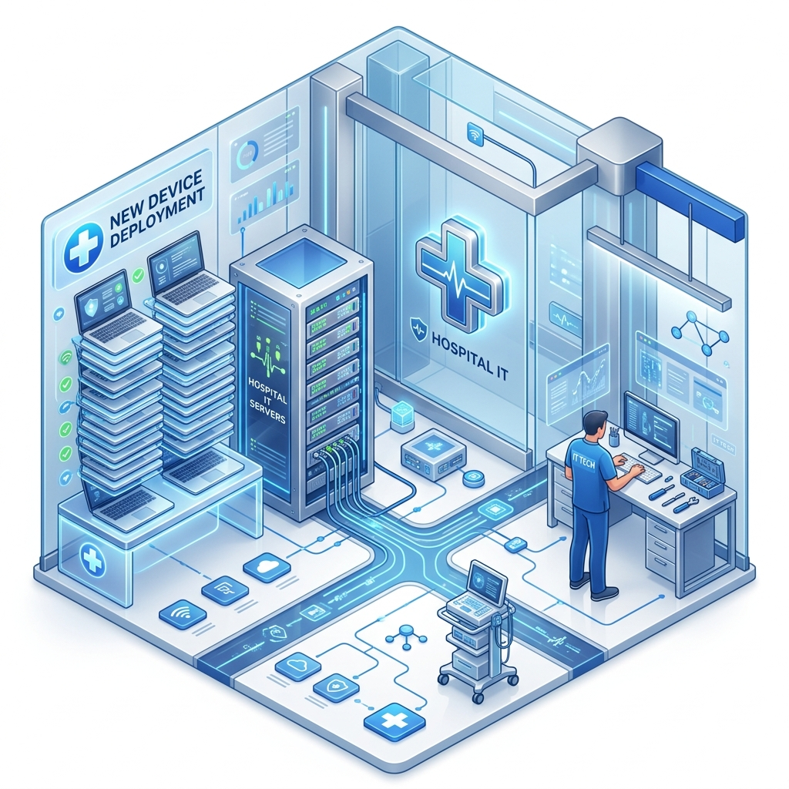
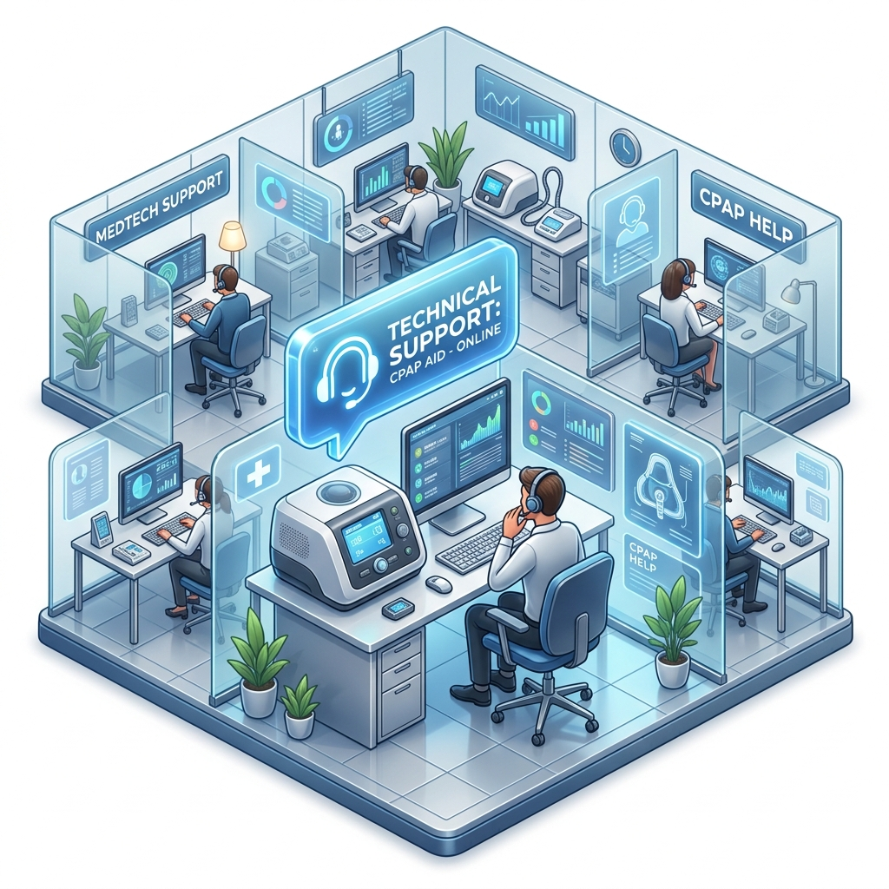

Hi, I'm Dylan Hardy
IT Support Analyst
Efficient and detail-oriented IT professional with 6 years of experience, including healthcare IT. Proven expertise in complex system troubleshooting and hardware deployments.
0
Years of IT Experience
0
+Laptops Deployed
0
Bank Branches Managed
0
%Customer Satisfaction
About Me
I am an Efficient and detail-oriented IT Support Analyst with 6 years of IT experience and 2 years of healthcare IT Experience. Proven expertise in troubleshooting complex system issues, managing hardware deployments, and providing exceptional customer service in fast-paced environments. Successfully led mass deployments of laptops and collaborated with cross- functional teams to enhance system integration and support. Skilled in Active Directory, ServiceNow, and network troubleshooting, dedicated to improving IT operations and user satisfaction.
Education
- Camden County College | Blackwood, NJ (Sept 2019 - Present)
- Camden County Technical School | Sicklerville, NJ (High School Diploma, 2015 - 2019)
Featured Accomplishments
Mass Laptop Deployment
Successfully led the organization-wide mass deployment of laptops and workstations for all Virtua Health personnel, ensuring smooth transitions and zero downtime.
Company Acquisitions
Individually organized and prepared materials for major Labcorp company acquisitions, managing all site integrations from Camden County to Cape May County.
Identity & Security Initiative
Spearheaded Multi-Factor Authentication implementation across Azure and configured YubiKeys for all bank employees at William Penn Bank, significantly boosting security.
Work Experience
- Troubleshoot and resolve client issues related to Labcorp systems, hardware, and connectivity.
- Escalate advanced or second-level system issues to appropriate internal support teams.
- Process hardware requests including ordering, setup, installation, and testing.
- Individually organize and prepare materials for major company acquisitions.
- Collaborate with cross-functional IT teams for seamless system integrations.

- Providing technical support for AVP and VP clients exclusively.
- Imaging Dell and HP Workstations and Laptops with Bitlocker configuration.
- Traveling to Virtua hospitals and offices to replace, maintain or service Workstations.
- Leading mass deployments of laptops for all Virtua personnel.
- First level of support for all Burlington Stores and Offices across the nation including Puerto Rico.
- Document and resolve tickets through ServiceNow, creating RMAs.
- Manage Multi-Factor Authentication for all employees through Microsoft Azure.
- Pushing appropriate software through BigFix for all corporate and store devices.
- Troubleshooting barcode scanner guns, HP pcs, MS Surfaces and Intel NUCs.
- Manage users in Office365 by adding, removing, enforcing MFA.
- Deploy Laptops and Workstations and recording the devices in MDM management.
- Troubleshooting in Server rooms to install printers, phones and workstations on the proper VLAN.
- Configured YubiKeys for Multi-Factor Authentication for every bank employee.

- Assisting customers in placing orders for CPAP machines and medical supplies.
- Troubleshoot machines over the phone as well as remotely.
- Worked in the inbound call center and via live chat.